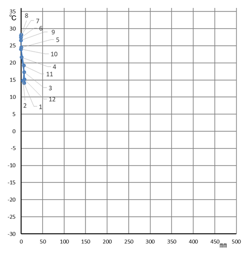 ［ 砂 漠 （ＢＷ） 気候］ |
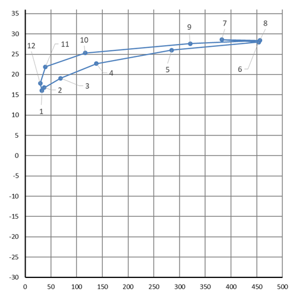 ［温暖冬季少雨 （Ｃｗ）気候］ |
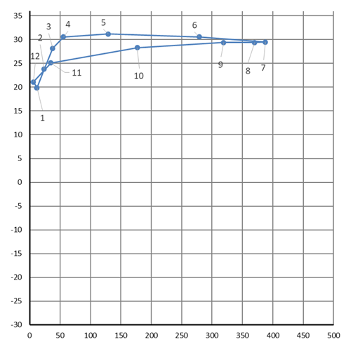 ［ サ バ ナ（Ａｗ） 気候］ |
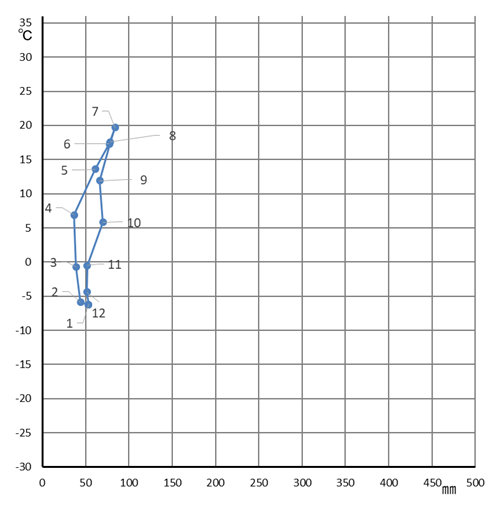 ［ 亜寒帯湿潤（Ｄｆ） 気候］ |
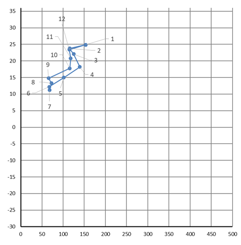 ［ 温暖湿潤（Ｃｆａ） 気候］ |
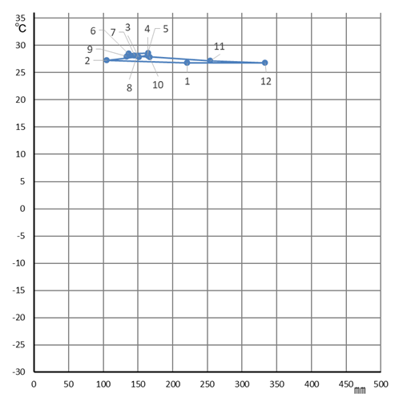 ［ 熱帯雨林 （Ａｆ） 気候］ |
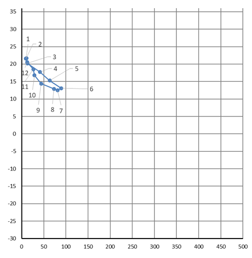 ［ 地中海性 （Ｃｓ） 気候］ |
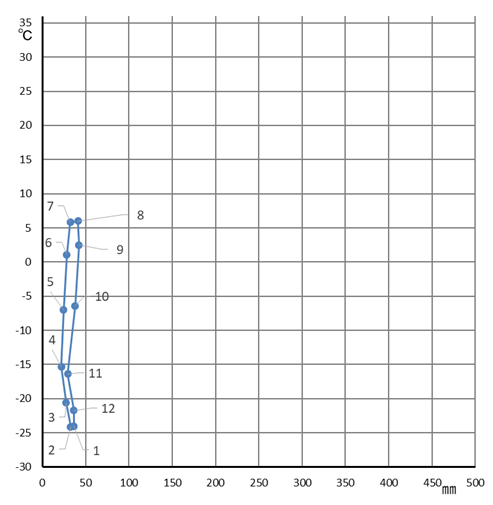 ［ ツンドラ （ＥＴ） 気候］ |
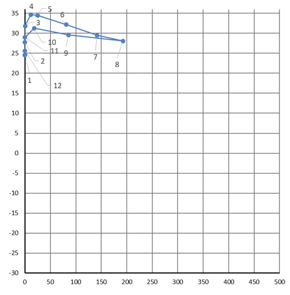 ［ ステップ （ＢＳ） 気候］ |
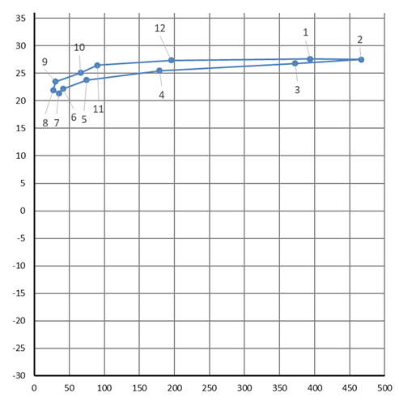 ［熱帯モンスーン（Ａｍ）気候］ |
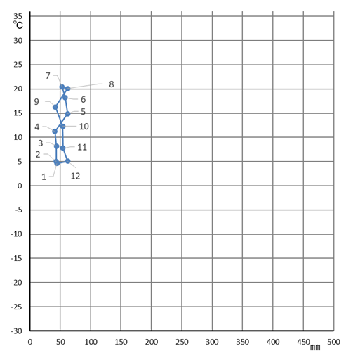 ［西岸海洋性 （Ｃｆｂ）気候］ |
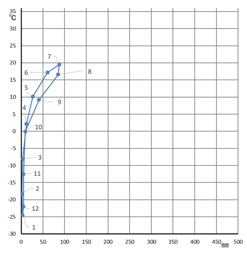 ［亜寒帯冬季少雨（Ｄｗ）気候］ |